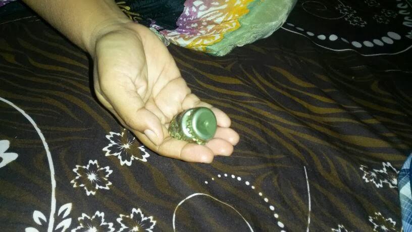
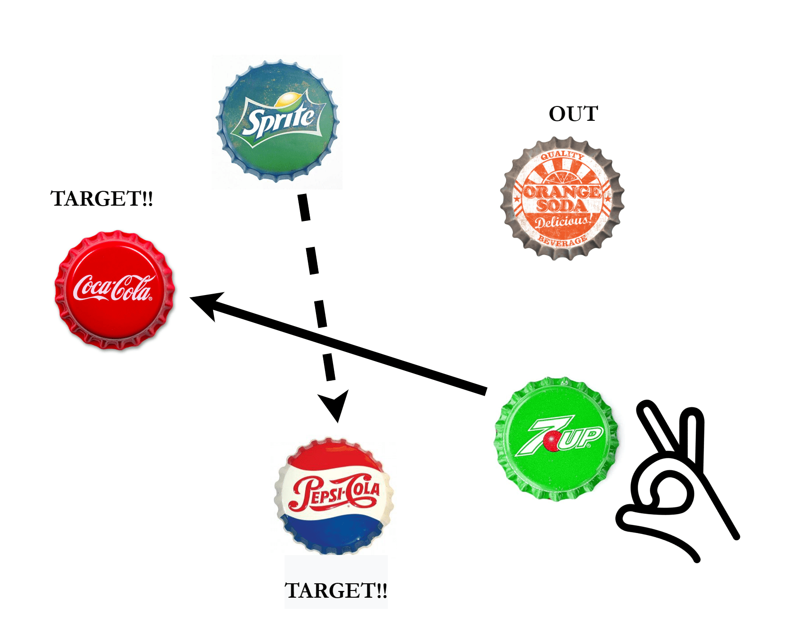
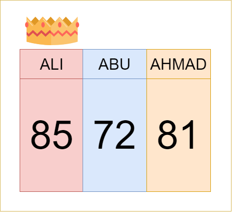

What is Ceper?
Ceper or "Tudung Botol" is a game based on the use five pieces of bottle cap which can be collected after buying some soda. It is one of the memorable games often played in the students. Ceper is the popular games around 1970-1980 and still surviving until now. This game usually involves two players and more. The more people, the merrier it will become. The objective of this game is to collect point as many as you can where the point is count based on how many ceper player manage to get in weighing.
Ceper
In the beginning, each person will weigh ceper (1 ceper represent 2 points). Player with higher point will start first.
Ceper must be stacked overlapping (vertical) and placed inside the hand. Then all the ceper will be thrown and player can remove one piece from five. Then, the opposing team will determine what shot you have to play. For each shot, player need to hit a ceper with another ceper using their finger/hand while abiding the rules (will be explain later).
Next, which is the hardest part of this game is that, only after player successfully play the shot then he can weigh. Winners will be determined by the highest total number of ceper successfully weighed.
Check Out This Video For More Info!
Rule 1: When playing the shot, one ceper cannot hit another ceper that is not supposed to be hit or else his turn is done.
Rule 2: You can use your arms and hands to deflect the caps.
Rule 3: Player will spin the ceper to play. Make sure each piece of ceper is not overlap.
Rule 4: If the allocation meets the criteria of the rule, the game can be continue with take one of the ceper which are scattered.
Rule 5: If there are 2 overlap ceper, in case of one ceper is onto another ceper: the other player will use chosen finger by the player(in current turn) to poke it and scatter them around. If there are 2 overlap ceper, in case of one ceper stack with another ceper: the other player will spin them out.
Rule 6: If there are 3 overlap ceper, it will be Jamban. Jamban is a shot where you have to hit another ceper using a ceper accross some distance(a span) from barricade of 3 ceper.
Rule 7: If there are 4 overlap ceper, it will be Bunga. Bunga is a arrangment of ceper resemble the flower shape. After the arrangement done, the other player will use chosen finger by the player(in current turn) to poke it and scatter them around.
Rule 8: If one of the ceper is upside down, the rest must also arranged in upside down. Also, the shot is not play with the finger/hand but using their breath.
FORUM
Ceper
Support Nostalgia Team
by sharing your story, experience and tips with other users under Forum section on each game pages.